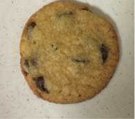
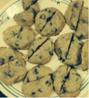
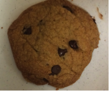
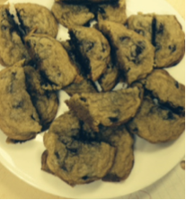
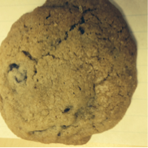
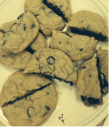

Good job on completing the quest for the perfect cookie! Here are some observations that we have made about cookie experiments in the past. Hopefully this will not only help you think about how to construct a cookie experiment, but also how to make the exact chocolate chip cookies you want!
| Alteration (Independent Variable) | Expected Outcome (Dependent Variable) | Picture |
|---|---|---|
| Extra flour | More gooey |  |
| Baking powder instead of baking soda | More cakey |  |
| Melted butter | Flatter, thinner cookies |  |
| Bake cookies for longer or shorter amount of time | Browner or lighter cookies |  |
| All white sugar | Sweeter flavor |  |
| Bake cookies at higher or lower temperature | Crispier or chewier cookies |  |
Remember to look through your own responses and pictures in your Notebook to review the lesson and compare your conclusions with ours!